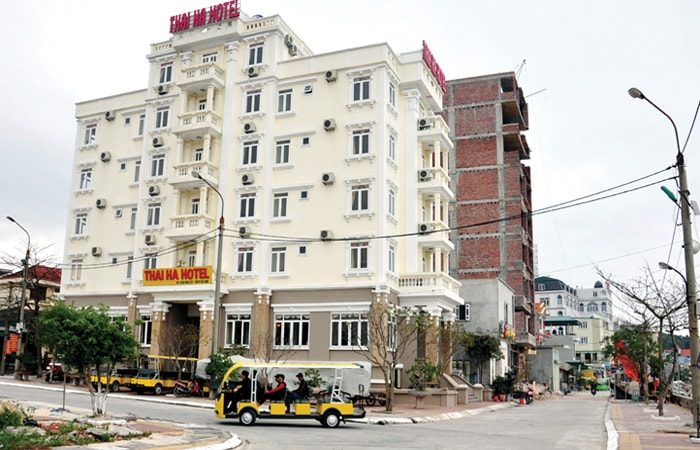
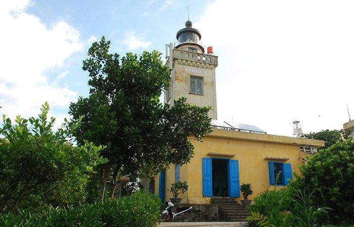
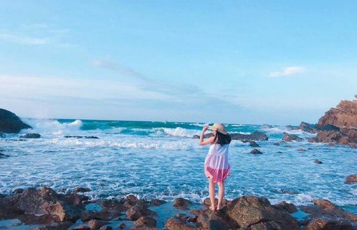
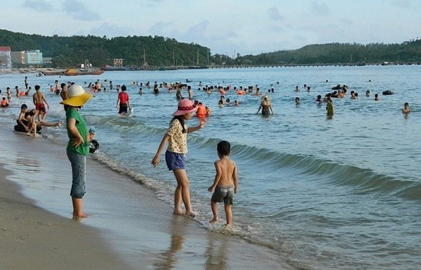
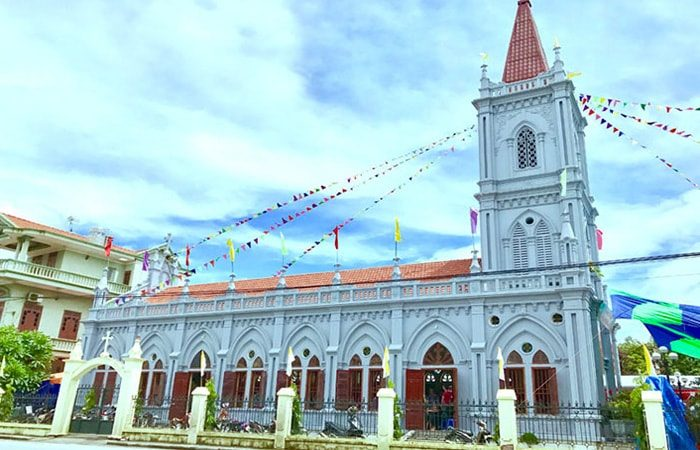
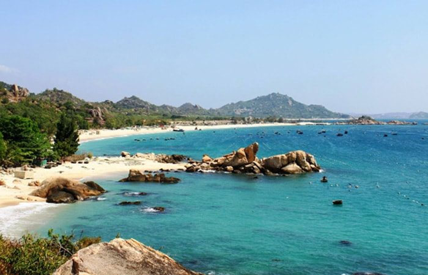
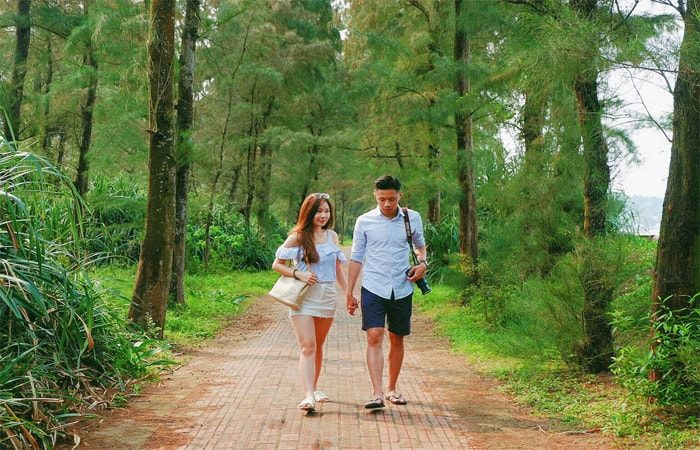
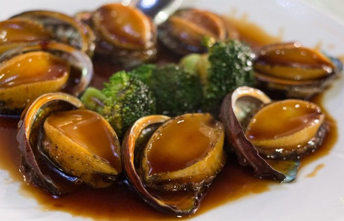
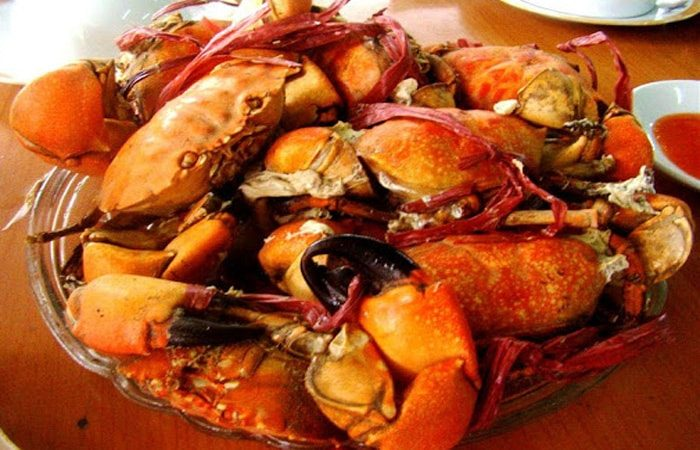
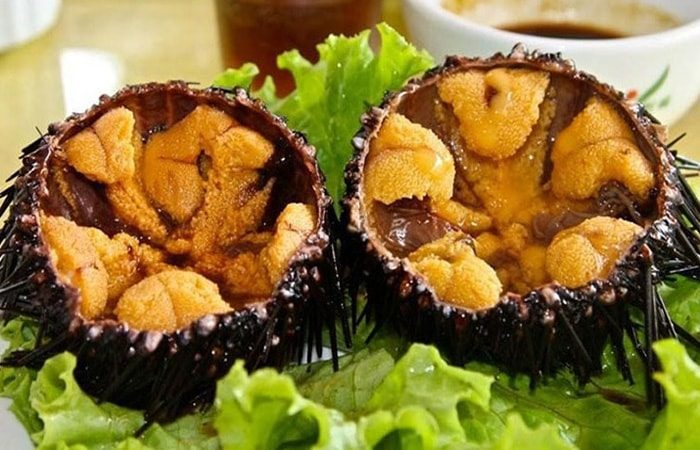

Du lịch Cô Tô từ lâu đã trở thành một đề tài thu hút nhiều du khách. Một hòn đảo xinh đẹp, hoang sơ nằm giữa trời Đông Bắc vùng đất mỏ Quảng Ninh.
Cô Tô tựa như một cô gái dịu dàng, e lệ nằm giữa một không gian bao la, đảo Cô Tô ẩn chứa biết bao nhiêu chuyện tình lãn mạn với biển xanh, cát trắng, không khí trong lành…. Chính vì vậy du lịch Cô Tô là sự lựa chọn sáng suốt trong những ngày nghỉ lễ, nhất là mùa hè du khách sẽ có nhiều thời gian để tận hưởng vẻ đẹp của hòn đảo kỳ bí này hơn và đây sẽ là một kỳ nghỉ đáng nhớ của du khách.
Để chuyến du lịch được trọn vẹn, hãy cùng Du lịch Việt lượt qua những kinh nghiệm quý giá này nhé.
I. Giới Thiệu Về Đảo Cô Tô.
Cô Tô là một quần đảo gồm trên 50 đảo lớn nhỏ nằm cách cảng Cái Rồng tỉnh Quảng Ninh tầm 50km, đảo Cô Tô có diện tích 46,2km2. Hiện trên đảo có tầm 1.500 hộ dân sinh sống và tầm 6000 nhân khẩu, quần đảo do chưa chịu sự tác động của bàn tay con người nên mang một vẻ đẹp hoang sơ và thu hút giới du khách đến thăm quan và khám phá.
II. Du Lịch Cô Tô Thời Điểm Nào Đẹp Nhất ?
Thời tiết cũng là một trong những yếu tố ảnh hưởng đến chuyến du lịch của bạn. Cô Tô đẹp nhất vào tháng 4 – tháng 9. Nhiều du khách lựa chọn đến Cô Tô vào mùa hè, do hòn đảo bao phủ bởi hệ thống rừng nguyên sinh điều hoà không khí nên thời tiết ở đây không quá nóng, nắng vàng, trời trong xanh.
Nếu bạn thích đến đây để tắm thì khoảng thời gian từ tháng 4 – 5 là thích hợp. Tuy vậy lúc này là thời gian cao điểm du lịch vì vậy giá thành các dịch vụ trên đảo sẽ cao đấy.
Tháng 6, 7, 8 tuy mùa này là mùa mưa nhưng vẫn thu hút du khách yêu thích phiêu lưu, mạo hiểm, đôi khi gặp thời gian biển động khiến tàu không thể ra đảo hoặc vào bờ, bạn cần theo dõi dự báo thời tiết trước khi đi nhé.
– Tháng 9 – 10 Cô Tô vào mùa thu, khí hậu mát mẻ, thích hợp cho những cặp đôi tình nhân ngắm cảnh, chụp hình, hưởng tuần trăng mật. Nước biển lúc này bắt đầu lạnh hơn nên ít người tắm.
– Tháng 9 – tháng 3 năm sau: Thời gian này vắng bóng du khách, nên giá thành du lịch Cô Tô rẻ hơn bao giờ hết, nếu bạn đi cô Tô lúc này chỉ nên ngắm cảnh không nên xuống biển vì rất dễ bị cảm lạnh.
III. Hướng Dẫn Đi Đến Đảo Cô Tô.
Là một hòn đảo đang được giới du khách quan tâm, hiện hạ tầng giao thông đi đến đây đã dễ dàng hơn trước nhiều. Phần lớn khách du lịch Cô Tô đến từ thủ Đô Hà Nội, du khách có thể đi theo 2 cách đến cảng Cái Rồng và mua vé ra đảo.
1. Đi Bằng Xe Khách.
Từ bến xe Mỹ Đình hoặc Lương Yên, Giáp Bát, bạn có thể mua vé đi Cửa Ông chỉ tầm 200k vnđ, có thời gian đi lại là tầm 4 – 5 tiếng. Một số hãng xe uy tín được nhiều người lựa chọn là Hoàng Long, Kumho, Việt Thanh. Theo kinh nghiệm của Du Lịch Việt, để kịp chuyến tàu ra đảo đầu giờ chiều hoặc 9h tối, bạn nên đi xe khách lúc sớm, hiện tần suất xe của những hãng đang khai thác là 30 phút có 1 chuyến.
Theo lịch trình của chuyến Hà Nội – Cô Tô thì điểm dừng sẽ là ngã 3 Vân Đồn, phường Bãi Cháy, tp Hạ Long. Tại đây, du khách có thể đón xe buýt đến cảng Cái Rồng. Lưu ý, du khách nên báo với tài xế là xuống Bưu Điện Vân Đồng, khi xuống xe bạn có thể đi tiếp tầm 1,5km là đến cảng Cái Rồng, có thể đi xe ôm hoạc đi bộ tuy hơi vất vả nhưng khá vui, giúp bạn hoạt động tốt cho sức khoẻ. Đến cảng bạn có thể nghỉ ngơi chờ sáng hôm sau đi Tàu tại cảng Cái Rồng đến Cô Tô.
2. Đi Xe Máy.
Là sự lựa chọn của nhiều phượt thủ. di xe máy bạn có thể tự chủ về giời gian, có thể dừng lại dọc đường để ngoạn cảnh đẹp, thưởng thức món ăn ngon địa phương. Đoạn đường Hà Nội – Vân Đồn là 200km, có thể đi theo hướng QL 1A là đến địa phận Quảng Ninh. Đến ngã 3 Vân Đồn rẽ phải, qua cầu Vân Đồn – đến Trạm Thu Phí là tới bưu điện Vân Đồng – tiếp tục rẽ phải >> Đi tiếp 1,5km là đến sát Cảng Cái Rồng. Du khách có thể mang xe ra đảo với giá 120k vnđ/xe/lượt, còn gửi xe thì tại cảng thì giá 20k vnđ/ngày đêm.
IV. Hướng Dẫn Mua Vé Tàu Cao Tốc Ra Đảo Cô Tô.
Hiện có có 2 sự lựa chọn tuyến tàu đi đảo Cô Tô khởi hành từ cảng Vân Đồn hoặc Cái Rồng đó là tàu Cao Tốc và Tàu Gỗ.
– Tàu Cao Tốc: khởi hành từ 13h00 – 13h30 xuyên suốt các ngày trong tuần thời gian di chuyển là 90 phút, giá tầm 180k – 200k vnđ/lượt/người.
Tàu Cao Tốc Mạnh Quang.
| Điểm Khởi Hành | Điểm Đến | Thời Gian Khởi Hành | Thời Gian Đến | Giá Vé (vnđ) |
| Cô Tô | Vân Đồn | 8h | 9h30 | 200k |
| Vân Đồn | Cô Tô | 13h30 | 15h | 200k |
| Vân Đồn | Cô Tô | 8h | 9h | 200k |
Tàu Gỗ: Giá vé 110k vnđ/người/lượt.
Hiện có một số chuyến tàu gỗ khởi hành đi Cô Tô vào sáng 7h:00 sáng từ thứ 2-6 hàng tuần. Thời gian đi tàu gỗ sẽ lâu hơn tầm 4h vì vậy du khách bị say sóng không nên đi tàu này.
Với tàu gỗ chiều từ Cô Tô vào đất liền thì thường khởi hành vào lúc 13h:00 các ngày từ thứ 4, 6, chủ nhật. Tàu về Cái Rồng tầm 13h:00 các ngày thứ 5, 6, 7 và cn.
Nếu hết tàu bạn có thể đi tàu tăng cường của Hải Quân: Thời điểm khởi hành lúc 6:00 sáng thứ 2 và 13:00 chiều thứ 6 về Cảng Vân Đồn.
Phương Tiện Di chuyển Trên Đảo Cô Tô.
Là một điểm du lịch đang phát triển, du khách có thể chọn lựa một trong các cách sau để đi lại như: thuê xe máy: giá tầm 150k – 220k vnđ/xe/ngày (chưa bao tiền xăng).
– Nếu bạn thích đi phương tiện mới lạ hơn có thể liên hệ với anh Mr Thế 0978.781.423 để được đi xe điện.
-Cạnh đó thì dịch vụ taxi, xe ôm, hay thuê xe 16 chổ cũng là một giải pháp tốt.
Lưu ý: nếu đi xe ôm thì nên hỏi giá trước khi lên xe kẻo bị chặt chém. Vì là khu du lịch đông khách nên bạn nên tìm hiểu đường xá để tránh bị lừa đi lòng vòng.
V. Địa Điểm Nghỉ Ngơi Trên Đảo Cô Tô.
Sau khi lên đảo Cô Tô, công việc đầu tiên của du khách là tìm về khách sạn, nhà nghỉ, homestay để nghỉ ngơi, dưỡng sức để sáng hôm sau tiếp tục hành trình khám phá của mình.
Hiện trên đảo có nhiều loại hình khách sạn, nhà nghỉ đủ cấp độ khác nhau. Tuy nhiên giá thành ở đây sẽ đắt hơn trên đất liền của mặt bằng Quảng Ninh vì nguyên liệu đều ngoại nhập.
Bạn có thể chọn lựa một số khách sạn sau:
1. Thai Ha Co To Hotel

Là khách sạn 3 sao nhưng đầy tiện nghi, sạch sẽ, phục vụ tốt. Thái Hà Co To gồm 62 phòng, nhân viên phục vụ ân cần chu đáo, là điểm dừng chân lý tưởng với nhiều du khách bình dân. Khách sạn này nằm ở vị trí đẹp, toạ lạc tại khu 3, thị trấn Cô Tô, có 3 mặt tiền, 1 mặt giáp với biển cách cảng Cô Tô tầm 500m.
2. Green Co To Hotel.
Là sự lựa chọn tốt của nhiều du khách đến với Cô Tô. Green Co To Hotel nằm bên cạnh bãi tắm tình yêu thơ mộng, cách cảng 1,8km, vì vậy du khách khi ở đây sẽ có một khoảng không gian yên tĩnh. Khi nghỉ ngơi tại Green Co To Hotel du khách có thể dể dàng tiếp cận các khu du lịch nổi tiếng như: Vịnh Hạ Long, Trúc Lâm Yên Tử,…
Khách sạn tuy chỉ với chuẩn 1 sao, gồm 16 phòng nhưng sự bài trí bên trong trang nhã, dễ chịu, êm ái và các nhiều tiện ích như máy lạnh, quầy ăn nhẹ và giá thành khá phải chăng, là nơi lý tưởng để bạn có thể nghỉ ngơi để tiếp tục cho hành trình khám phá đảo xanh Cô Tô.
Kinh nghiệm của Du Lịch Việt: Với du khách đi phượt, bụi, thích khám phá, bạn nên thuê những khách sạn gần trung tâm thị trấn, gần bãi tắm tình yêu, tiện bề cho việc thăm quan các khu vui chơi khác trên đảo. Nếu bạn muốn có một kỳ nghỉ yên tĩnh, sau những ngày làm việc bộn bề nơi thành thị tấp nập thì có thể thuê nhà nghỉ, khách sạn gần khu bãi tắm Hồng Vàn, Vàn Chảy, tại đây sáng sớm bạn có thể thức dậy cùng với người thân yêu cùng ngắm bình minh hay chiều tà cùng ngắm hoàng hôn trên biển cực đẹp.
VI. Địa Điểm Du Lịch Cô Tô Không Thể Bỏ Qua.
Sau khi đã có nơi ở ổn định để nghỉ ngơi, sáng ngày hôm sau, du khách có thể tiếp thành hành trình khám phá đảo Cô Tô. Sau đây là những địa điểm du khách hấp dẫn du khách không thể bỏ qua.
1. Bãi Đá Cầu My.
Được ví như một thiên đường tình yêu, tuổi trẻ, là điểm ngắm bình minh đẹp nhất trên đảo. Bãi đá được hình thành bởi tự nhiên, gồm nhiều lớp trầm tích ở phía Nam của đảo xếp chồng lên nhau. Trải qua hàng vạn năm dưới biến động của địa chất, nước biển bào mòn tạo nên một mức tranh sống động của thiên nhiên.
Khi nhìn trên cao, toàn khu này giống như đuôi chuột hướng ra biển cả. Khung cảnh thiên nhiên hiện ra vô cùng hoành tráng, hoang sơ là một điểm check – in chụp hình vô cùng lý tưởng cho nhiều bạn trẻ.
2. Hải Đăng Cô Tô.

Là một điểm ngắm cảnh đẹp nhất trên đảo, cao 118m so với mực nước biển, có tầm nhìn bao quát toàn cảnh Cô Tô vì nằm trên đỉnh núi cao giữa đảo. Đứng trên ngọn Hải Đăng phóng tầm nhìn 4 bền non nước, gần là biển xanh, những mái nhà giản dị, xa là hải đảo và đất liền, thu vào tầm mắt nhỏ bé của bạn muôn trùng nước non.
Hải Đăng Cô Tô nằm ở phía Đông của đảo Vân Đồn, trên đỉnh núi cách thị trấn tầm 5km, công trình được xây dựng vào cuối thế kỷ 19. Để lên được đỉnh núi có đặt ngọn hải đăng này du khách phải đi trên một con đường quanh co, nhiều tán lá cây rừng rậm rạp bao phủ, mát rượi, khiến cho du khách có cảm giác lòng nhẹ nhàn, thanh thản, bình yên, là một điểm du lịch hấp dẫn, với những trải nghiệm ý nghĩa.
3. Bãi Biển Hồng Vàn Lãng Mạn.
Là một bãi biển đẹp nằm ở phía đông cuả đảo, sóng yên biển lặng, nhiều cặp đôi tình nhân thích đến đây đi dạo, tìm cảm giác yên tĩnh để bên nhau. Nơi đây nằm xa khu dân cư nên ít người.
Tại bãi biển Hồng Vạn, du khách sẽ được chiêm ngưỡng bờ cát mềm mại, nước biển trong vắt khiến bạn không nỡ rời xa. Gần bãi cát là những căn nhà gỗ được các doanh nghiệp địa phương thiết kế khá sáng tạo, chỉ cần mở cửa là có thể được hoà mình vào làn nước biển trong xanh, mát lạnh và nơi này được chọn làm điểm ngắm hoàng hôn đẹp nhất trên đảo.
4. Bãi Biển Vàn Chảy.

Là bãi tắm được khách du lịch Cô Tô bình chọn đẹp nhất đảo Cô Tô. Với bờ cát trắng mịn, trải dài đến vô tận. Du khách đến đây không chỉ được tắm biển, ngắm cảnh đẹp mà còn được tham gia những trò chơi sôi động. Bãi biển Vàn Chảy được nhiều công ty du lịch tổ chức những team building hấp dẫn trong những ngày nghỉ lễ, mùa hè.
Tại đây nhiều trò chơi thể thao trên biển được du khách yêu thích, đặt biệt là dịch vụ ngủ liều trên biển vô cùng thú vị, được hoà mình vào mây trời thiên nhiên.
5. Bãi Tắm Tình Yêu.

Là địa điểm được nhiều bạn trẻ, phượt thủ đến vui chơi, check -in, chụp hình nhiều nhất khi du lịch Cô Tô. Bãi tắm này nằm khá gần với cầu Tàu của trung tâm thị trấn Cô Tô nên nhiều du khách dể tìm đến nơi.
Bãi tắm Tình Yêu với những con sóng nhẹ lăn tăn vỗ bờ lại khá gần với trung tâm thị trấn nên chỉ cần vài phút đi bộ là bạn có thể đến trải nghiệm.
6. Nhà Thờ Cô Tô.

Là điểm thăm quan thu hút với nhiều khách du lịch Cô Tô. Nhà thờ Cô Tô thuộc khu 4, giáo xứ Cẩm Phả, hạt Hòn Gai, giáo phận Hải phòng.
Là công trình kiến trúc đặc sắc được khánh thành ngày 28/5/2013. Là nhà thờ đầu tiên trên đảo được xây dựng với sự chung sức của người dân huyện đảo. Với diện tích xây dựng chiều dài 26,7m và rộng 9,8m. Đến thăm quan nhà thờ bạn sẽ thấy đây là một công trình khá bề thế, có hoà lẫn một ít với kiến trúc phương tây.
7. Đảo Thanh Lân.

Là một hòn đảo đẹp, thơ mộng, vắng vẻ khiến cho du khách có cảm giá thanh bình. Chỉ mất tầm 20 phút đi tàu gỗ là đến. Khi đặt chân lên hòn đảo này du khách sẽ thấy những con đường nhỏ uống lượn quanh co, xung quanh là những cánh rừng nguyên sinh bám theo những bãi cát dài, làn nước trong xanh. Tại đây bạn sẽ được thưởng thức món hải sản tươi ngon được phục vụ tại một số hàng quán gần các bãi biển đẹp thơ mộng như: bãi Hải quân, bãi ba châu và bãi C67.
8. Con Đường Tình Yêu.

Là một con đường mang một vẻ đẹp lãng mạn, thơ mộng thu hút nhiều cặp đôi tình nhân dạo bước, ngắm cảnh biểu chiều hôm. Để đến con đường này du khách sẽ bước trên lối vào con đường xanh, dưới những tán phi lao thẳng tắp hai bên đường. Con đường này tuy không rộng nhưng dài hun hút và êm đềm.
Khi bước trên con đường tình Yêu này du khách sẽ cảm nhận được sự yên bình của rừng cây xanh ngắt, sắc vàng của ánh nắng chiều tà, màu đỏ của gạch lát trên quãng đường 2km, cảnh đẹp tựa như trong những bộ phim Hàn Quốc lãng mạn.
VII. Đặc Sản Cô Tô – Ăn Gì Khi Du Lịch Cô Tô.
Sau những chặng đường vui chơi nghỉ dưỡng, được thưởng thức những món ăn ngon đặc sắc là điều mà hầu hết du khách mong muốn. Nói về du lịch Cô Tô thì không thể không nhắc đến một số món ăn đặc sản hấp dẫn sau:
1. Bào Ngư.

Là một loại hải sản quý giá, bào Ngư còn có tên gọi là ốc Cửu Khổng. Được xem là 1 trong 8 món ăn tuyệt phẩm được tầng lớp quý tộc ngày xưa yêu thích. Ngày nay, thịt bào ngư được dùng làm nguyên liệu chế biến món ăn ngon giàu dinh dưỡng như cháo, soup, bào ngư hầm, xào, chơm bào ngư, bào ngư nướng, hầm,… tất cả đều là tuyệt phẩm trong ẩm thực nổi tiếng của nước Việt Nam.
2. Cu Kỳ.

Nằm trong danh sách những hải sản độc lạ thơm ngon tại Cô Tô. Chính vì vậy nên Cu Kỳ được nhiều lái thương mua lại tại vùng biển Cô Tô với giá rất cao để bán lại cho các nhà hàng trong đất liền Quảng Ninh và các tỉnh thành ở phía bắc, thủ đô Hà Nội. Một đặc điểm là, nếu bạn muốn thưởng thức Cu Kỳ thơm ngon thì cần ăn tại Cô Tô thì mới giữ được vẻ tươi ngon được vì cu Kỳ khó bảo quản.
3. Cầu Gai.

Nhiều người thường gọi Cầu gai là nhum biển, nhím biển. Vẻ bên ngoài của nó có nhiều gai và hình cầu. Cầu gai được các nhà hàng, quán ăn tại Cô Tô chế biến thành món ăn hấp dẫn, nhưng ngon nhất là nướng, nấu cháo hoặc ăn sống. Có dịp du lịch Cô Tô bạn phải thưởng thức nhé.
Theo kinh nghiệm của Du Lịch Việt, để thưởng thức những món đặc sản Cô Tô bạn có thể đến một số hàng quán bình dân tại trung tâm thị trấn đảo hay gần các chợ, hoặc ghé các quán như:
– Quán ăn bình dân Cồ Nghĩa.
Địa chỉ: Nam Hải, khu 3, thị trấn Cô Tô.
Là địa điểm ăn ngon, có giá khá bình dân được nhiều du khách ghé thăm quan. Quán này chuyên phục vụ đồ ăn ngon với thực đơn vô cùng đa dang như xôi hải sản, cháo hải sản, phở, bún hải sản…Giá cả khá phải chăn chỉ tầm 30k – 40k vnđ/bát
– Nhà Hàng Uý Thanh tại trung tâm thị trấn Cô Tô địa chỉ: Lê Quý Đôn, khu 3, tt Cô Tô. Với những thực đơn phong phú theo mùa phù hợp với mọi đối tượng thực khác và giá cả ở đây phải chăng. Giá cả 200k vnđ/người.
– Nhà Hàng Hải Âu.
Địa chỉ: Nam Hải, khu 3, thị trấn Cô Tô. Có những món ăn ngon du khách có thể thoả thích thưởng thức, nhiều khách du lịch thường ghé quán này bởi sự phục vụ của chủ quán ân cần chu đáo, không hét giá, món ăn đa dạng như bào ngư, tôm, mực, sò điệp, ốc móng tay. Giá món ăn: chỉ tầm 150 vnđ/người.
Là một điểm hấp dẫn trong hành trình du lịch Quảng Ninh, đảo Cô Tô còn khá nhiều điều kỳ thú đang chờ quý khách đến khám phá. Hãy đồng hành cùng với Du Lịch Việt nhé!